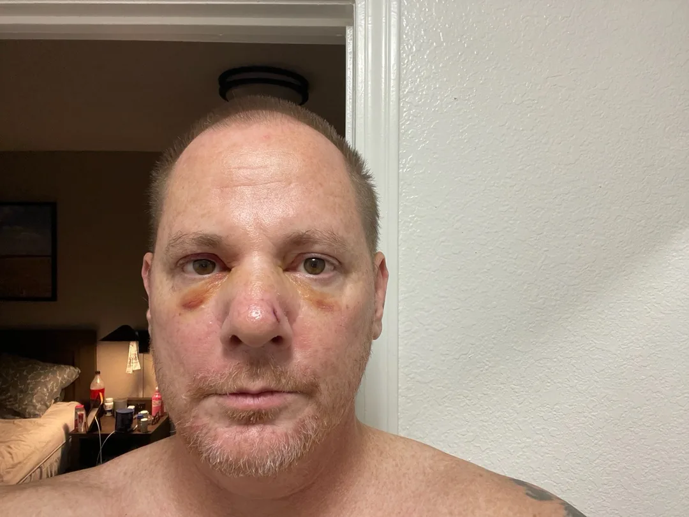
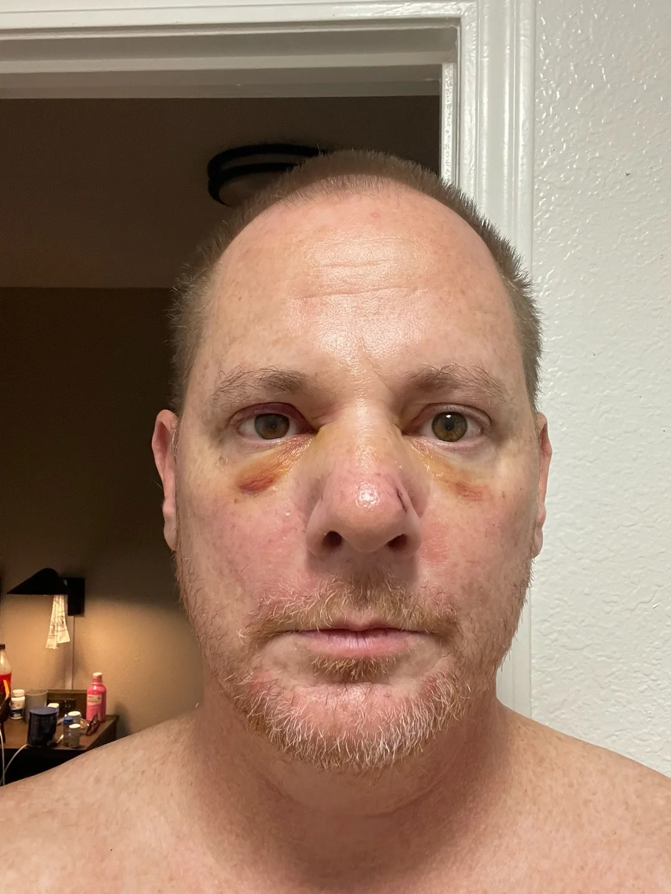
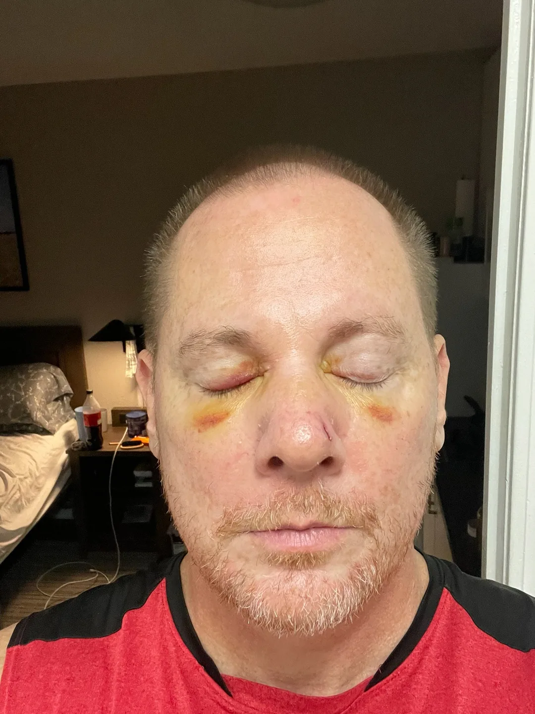
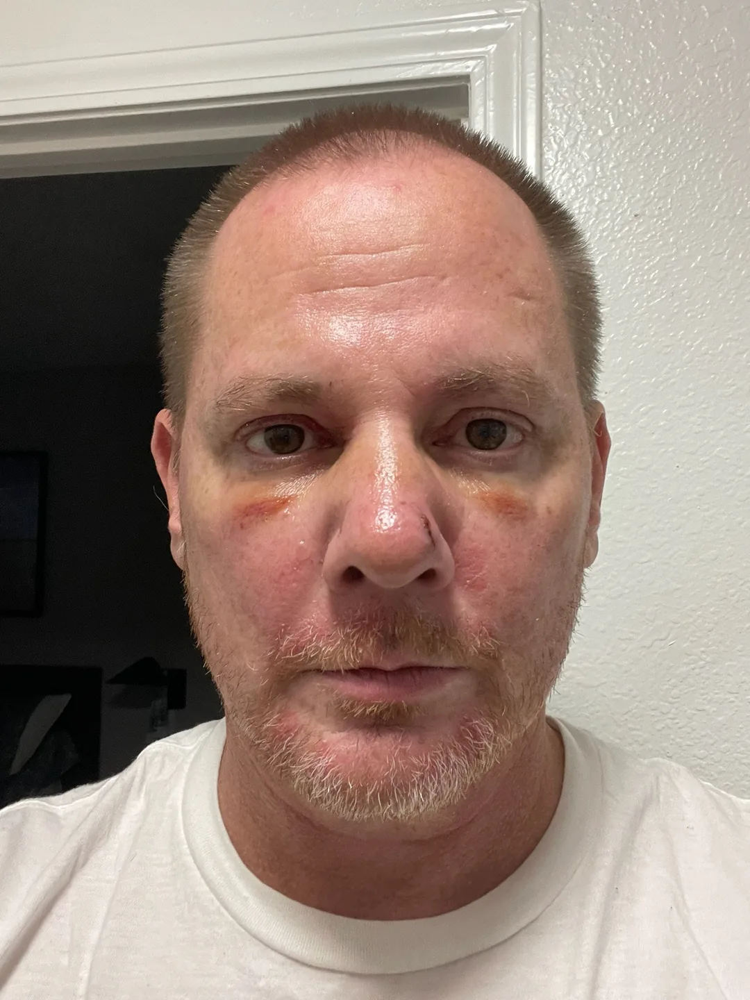

Articles & Inspiration
Practical insights for everyday recovery, honest reflections on starting over, and encouragement grounded in lived experience.
Explore articlesFAITH • RECOVERY • GROWTH • NEW BEGINNINGS
Save this site so it’s always one tap away.
After 34 years of struggling with alcohol, I’m rebuilding my life through recovery, faith, and one honest day at a time. Whether you’re seeking help or walking beside someone who is, you’re welcome here.
Counting from August 20, 2026 — and today is the only day that has to be won.
Even after the storm, there is hope. My name is Steven. I created My Recovery Journey to share the real experience of rebuilding my life through recovery, faith, and daily choices. The past cannot be rewritten, but the next chapter is still ours to shape.
Inspired by the rugged beauty of the Pacific Northwest, this is a place for honest stories, practical support, and new beginnings.
Practical insights for everyday recovery, honest reflections on starting over, and encouragement grounded in lived experience.
Explore articlesComing in 2027: a community review directory of treatment experiences, shared thoughtfully and with privacy in mind — only with permission, and anonymously if you wish.
Learn about reviewsExplore personal experiences, resilience, and hope from people navigating different paths toward recovery. Coming in 2027 — if you have a story you’d like to share, it will be published only with your permission, anonymously if you wish.
Discover storiesWhether you’re beginning again or building on years of recovery, there’s a place for you here.
Find practical first steps, meeting information, and encouragement without judgment.
Get startedExplore connection, healthy routines, purpose, and support through every season.
Keep growingRead recovery FAQs and discover a space for community voices.
Browse FAQsMy Recovery Journey is a welcoming space for people seeking freedom from addiction, rebuilding their lives, or supporting someone they love. Here you’ll find a personal story of recovery, encouragement, faith, and links to trusted resources.
Every small step toward healing matters.
Supportive people and communities can make the journey less lonely.
Your past does not have to determine your future.
Dated notes from the road — proof this journey is lived one day at a time, and still being written.
This is what my addiction looks like. These photos aren’t from today — they’re from before I got sober. This is me after a drinking binge. I got up out of bed, took a couple of steps, and passed out falling face first onto the hardwood floor in the hotel I had locked myself away in, breaking my nose. It wasn’t pretty.
Today is my birthday — and it’s Day 77. After 34 years with alcohol, there were plenty of days I wasn’t sure I’d be here for another birthday, let alone living one clear-headed and working on a new life.
Practical, everyday tools to support your recovery, strengthen your mindset, and keep you moving forward — one day at a time.
Take a moment to write something you’re grateful for today — even if it’s small.
Celebrate your progress and recognize how far you’ve come.
Enter the date you began your current recovery journey to see your days, weeks, and months — and the badges you’ve earned.
Your count updates right here on this device — nothing is sent anywhere.
A short, meaningful reflection to encourage growth and perspective.
Consider:
Try this simple 5-4-3-2-1 grounding exercise to reconnect with the present — move through your senses, one step at a time.
Then consider one small, safe next step: drink water, take a short walk, contact a supportive person, or attend a meeting.
Find recovery supportRecovery is built through small choices. Pick one action for today.
Tap a step to mark it as chosen for today. One small step is enough.
Privacy: These tools work without an account. Nothing you type or tap here is sent to My Recovery Journey or any server — the journal, milestone date, and checklist are saved only in this browser, on your device, so they are here when you come back. Anyone who uses this device can see them, and clearing browser data erases them. Use the download button on the journal page to keep a copy of your entries.
A reminder: A setback does not erase what you’ve learned. If you’re struggling, consider reaching out to your sponsor, a trusted person, or a qualified professional.
My name is Steven, and this is my recovery journey.
For 34 years, alcohol was a part of my life. During those years, addiction cost me opportunities, relationships, stability, and much of the life I had hoped to build.
There were times when I felt completely lost, wondering whether I could ever find peace, happiness, or purpose again.
But my story isn’t finished.
Today, I’m choosing recovery. I’m learning to face my past, rebuild my life, strengthen my faith in God, and discover who I can become without alcohol.
I created My Recovery Journey because I know there are others who feel alone, discouraged, or uncertain about their future.
If you’re one of those people, I want you to know that your story isn’t finished either.
Recovery isn’t about having a perfect past. It’s about making a different choice today and finding the courage to keep moving forward.
One day at a time. One step toward a new life.
I’m not writing this from a place of having it all figured out. I’m writing it from the middle of the work: choosing recovery one day at a time, rebuilding trust, strengthening my faith in God, and learning who I can become without alcohol.
Recovery, for me, is not a single dramatic moment. It’s a series of daily decisions: showing up to meetings, reaching out when isolation starts to sound appealing, practicing gratitude even when it feels forced, and asking God for strength on the days when my own runs out.
I’m learning to face the damage without drowning in it. I’m working to rebuild trust with people I hurt. And I’m discovering that structure, rest, and honest conversation are not optional extras — they are part of how I stay free.
— Steven Gregory
Counting from August 20, 2026 — one day at a time.
Faith, hope, and the courage to keep moving forward. Whatever yesterday held, today is another chance to choose recovery and connection.
“Your past is part of your story, but it does not have to be the end of your story.”
Short, dated notes from my recovery — newest first. This page grows as the journey does.
This is what my addiction looks like.




These photos aren’t from today — they’re from before I got sober. This is me after a drinking binge. I got up out of bed, took a couple of steps, and passed out falling face first onto the hardwood floor in the hotel I had locked myself away in, breaking my nose. It wasn’t pretty.
My addiction is ugly, conniving, deceitful, cunning and most of all patient. It will stand in the dark, waiting for an opportunity, a crack in the foundation, a weakness to arise to attack.
My addiction wants me to forget. Forget all of the bad times; forget the loneliness, of isolation, the depression, fear, anxiety, shame, regret, and resentment. The stints in jail, multiple rehabs, losing everything I owned multiple times. My career, my everything. Homelessness.
It wants me to remember the brief window where all of those emotions disappeared, and I finally felt relief.
I don’t like who I am, I haven’t liked myself for a very long time. Plying myself with alcohol allowed me to gain a brief reprieve from all the hurt, and pain I felt each day.
I just wanted to share this with you tonight. The battle I’m fighting will be a fight I’ll have to face every day for the rest of my life. Step by step, day by day.
The commercials on television that advertise beer and liquor make it all seem like a glamorous lifestyle where everyone is happy, having a great time. And maybe for some, that’s true. But there is a very deep chasm in a very dark, lonely and cold reality where I find myself imprisoned and lost with no hope.
However, at 51, after 34 years of getting in the ring and going toe to toe with this beast, once again I cried out to my higher power for help, I surrendered, I threw my hands up and said I give up. God save me from this hell I’ve created.
I’ve been sober now for 77 days. I finally feel hope again; something I haven’t had in a long time.
If you’re tired of fighting, climb out of the ring, surrender to your higher power, ask for help, and let go of the wheel. I drove my life into the gutter every time I tried to do it on my own. I lost everything. Tonight, I pray that God lead me where he wants me to go. His will over mine. I’m doing my best to put my faith, as shattered as it is into him answering me and taking control.
If you can relate to this message I’m sharing, leave a comment. When we open up and let it out and share our suffering with others, being honest with ourselves, our higher power and others, then we have a chance to begin healing.
Good night and may God bless everyone who sees and reads this. 🙏🏻
Today is my birthday — and it’s Day 77.
I don’t take that lightly. After 34 years with alcohol, there were plenty of days I wasn’t sure I’d be here for another birthday, let alone living one clear-headed and working on a new life. I didn’t get here by my own strength. God has been restoring things I thought were gone for good, one day at a time.
I’m not where I want to be yet, and I still have a lot of rebuilding to do. But today I get to wake up sober, be honest about where I am, and keep taking the next right step. That’s a gift I don’t want to waste.
If you’re reading this and you think it’s too late for you, or you’ve messed things up too many times — I understand that feeling. Your story isn’t finished. You don’t have to do this alone.
Thank you to everyone who has walked with me, prayed for me, and encouraged me on this road. If you’d like to say hello, I’d love to hear from you on the My Recovery Journey Facebook page.
Day 76. I don’t say that like I’ve arrived somewhere. I say it because this morning I woke up and I had to make the same choice I made yesterday — to keep going, one day at a time.
Some days that choice is easier than others. Yesterday had moments where my mind wanted to go back to old thoughts and old ways of handling things. Isolating sounded easier than reaching out. But I’m learning that isolation is where I get into trouble. So I went to a meeting. I listened. I was honest about where I am. That helped more than sitting alone with it would have.
I’m still in the middle of the work. I’m still rebuilding things I can’t fix overnight. I’m still learning to ask God for strength on the days when my own runs out, and to practice gratitude even when I have to look a little harder to find it. Today I’m grateful for another morning clear-headed, for people who understand this road, and for grace to try again today.
If you’re reading this and you’re early in recovery, or you’re thinking about starting again — your story isn’t finished either. You don’t have to do this alone.
If you’d like to say hello, I’d love to hear from you on the My Recovery Journey Facebook page. Thank you for walking with me.
Right now I’m feeling restless. I don’t know what to do with myself. I’m nervous, I’m anxious, I’m worried and afraid, and I just feel numb. I don’t feel any happiness. I don’t feel any contentment, and I don’t know what to do about that.
I’m wondering how I’m going to spend the rest of my life sober. I’ve used substances throughout my life to escape from a reality that I am not happy with — and I can’t find happiness or peace in sobriety, because I still want to escape.
I struggle with depression, anxiety, fear, doubt, worry, resentment, anger, grief, and shame.
I’m constantly in fear of what my future holds. I’ve been homeless since May of this year, and I’m currently in an addiction treatment center here in Mississippi. I have no idea what’s going to happen when I leave here, or where I’m going to go, or what I’m going to do, or how I’m going to do it. I don’t have a job. I don’t have any money, and I’m terrified of ending up homeless on the streets.
I pray every day, asking God to prepare my path and to protect me and keep me safe. I have faith — although my faith is weak — but I have to trust in the Lord that He is guiding me, that He is protecting me, and that He will lead me to where He wants me to go.
And I’m still taking steps. I just set up a medication schedule reminder to help make my days easier. And I’ve decided to use ChatGPT to help me learn the Twelve Steps and Twelve Traditions of Narcotics Anonymous, one step at a time.
If you’re reading this and you feel numb, restless, or afraid today — you’re not the only one. I’m right here in it too, and I’m still sober today. One day at a time. One step toward a new life.
A daily prayer for letting go of the past — releasing yesterday’s mistakes and choosing to walk in freedom today.
Sobriety is a step by step, day by day journey. Please visit my website and say hello!
“71 Days Sober…”
For 34 years, alcohol was a part of my life. Over those years, addiction took more from me than I ever imagined it could. I lost opportunities, stability, relationships, and pieces of the future I once dreamed of having.
There have been moments when I’ve looked at my life and wondered how I could possibly begin again. I’ve felt angry about the years I’ve lost, lonely, uncertain, and afraid of what comes next.
But somewhere in the middle of all that pain, I made a decision: I don’t want addiction to write the rest of my story.
Choosing recovery doesn’t mean everything suddenly becomes easy. I still have things to rebuild, mistakes to learn from, and challenges ahead of me. But I’m beginning to understand that I don’t have to fix my entire life overnight. I only have to take the next right step.
Through this journey, I’m holding on to my faith in God. I’ve prayed when I felt hopeful, and I’ve prayed when I felt angry and discouraged. I’ve asked for peace, strength, direction, and a reason to look forward to tomorrow.
One passage that speaks to my heart is Joel 2:25, where God speaks of restoring the years that have been lost. I cannot go back and reclaim the past. But I can begin building something different today.
That’s why I created My Recovery Journey — to share what I’m learning, to be honest about the struggles, and to remind someone else that they don’t have to face recovery alone.
My past is real. My recovery is real. And my future is still unwritten. One day at a time. One step toward a new life.
My Christian faith is part of my story of recovery. Here you’ll find Scripture for difficult days, Christian devotionals, and resources for exploring faith and spiritual growth. Wherever you are in your beliefs, you’re welcome here.
The LORD says, “I will give you back what you lost…” — Joel 2:25 (NLT) reminds me of God’s promise of restoration and the hope of a new beginning.
Scripture references on My Recovery Journey use the New Living Translation (NLT).
New to recovery — or starting again after a setback? You do not have to figure everything out today. Begin with one next step.
In the U.S., call or text 988 any time for crisis support, or call SAMHSA’s National Helpline at 1-800-662-HELP (4357) for free, confidential treatment referrals, 24/7. In immediate danger, call 911.
You do not have to figure this out from a homepage. Here is how to find real help, close to home, in the next few minutes:
Find a meeting near you — at most open meetings you can simply sit and listen. You do not have to speak, join, or explain yourself. Both sites also list online meetings you can join from anywhere, today.
Find an AA meeting Find an NA meeting
Find treatment near you — free, confidential, 24/7, in English and Spanish: SAMHSA’s National Helpline, 1-800-662-HELP (4357), or search by ZIP code at FindTreatment.gov.
In crisis right now? Call or text 988 any time in the U.S. In immediate danger, call 911. Then tell one person near you what is happening — you do not have to carry a hard moment alone.
My Recovery Journey is one man’s personal story and encouragement — not a treatment provider, medical advice, or an emergency service. The organizations above can help you today, where you live.
Recovery is not built in a day, and it does not have to be carried all at once. Eat something, drink water, rest if you can, and aim only at getting through today. One day at a time is not a slogan here — it is the whole plan for today.
Connection is where recovery gets less lonely. At most open meetings you can simply sit and listen — you do not have to speak, join, or explain yourself. There are several different kinds of programs, and one of them will fit you better than the others.
A sponsor, a trusted friend, a counselor, a pastor, someone at a meeting — one honest conversation can change the shape of a day. Asking for help is not weakness. For most of us, it was the first strong thing we did.
If alcohol or drugs have a real hold, willpower alone may not be the right tool — treatment, counseling, and medical support exist for exactly that reason. SAMHSA can point you to options near you, in English and Spanish.
Read today’s reflection, write one line of gratitude, or pick a single item from the Next Right Step checklist. Small steps, repeated daily, are how a new life actually gets built.
A note: My Recovery Journey is one man’s personal story and encouragement, not a treatment provider, medical advice, or an emergency service.
There is more than one road into recovery. People heal through different programs, and many combine more than one. Read through them honestly and start with the one you will actually walk.
A worldwide fellowship built on the Twelve Steps and shared experience, focused on recovery from alcoholism. Meetings are free, widely available in person and online, and newcomers are welcome to just listen.
Visit AA Find a meetingA Twelve Step fellowship for people recovering from drug addiction, with the same peer-support spirit as AA. If substances beyond alcohol are part of your story, NA may feel like the closer fit.
Visit NA Find a meetingA science-based approach that teaches practical tools for changing addictive behavior — building motivation, coping with urges, and managing thoughts and emotions. No spiritual component, and meetings run in person and online.
Visit SMART RecoveryA Christ-centered recovery community based in churches, working through biblical principles alongside step study. It addresses hurts, habits, and hang-ups of many kinds, not only substance use.
Visit Celebrate RecoverySupport for the family and friends of people who drink — because addiction affects the whole household, and loved ones need recovery of their own. If you are here supporting someone else, this one is for you.
Visit Al-AnonDetox, inpatient and outpatient treatment, counseling, and medication support are real, respectable parts of many recoveries — including mine. SAMHSA’s FindTreatment.gov lists confidential, facility-based options by location.
Find treatmentNo program on this page is the only way, and My Recovery Journey does not speak for any of them. What matters is not which door you walk through — it is that you walk through one, and keep coming back. If faith is part of your road, you are welcome on the Faith page too, whatever you believe.
Straightforward answers about this site, about recovery, and about what to do next.
No. This is Steven’s personal website — one man sharing his story, his faith, and tools that help him, plus links to organizations that do provide professional help. It is not medical advice, therapy, or an emergency service. If you need treatment, start with SAMHSA at 1-800-662-HELP (4357) or FindTreatment.gov.
Steven Gregory — from Gallatin, Tennessee, a Tennessee Tech graduate, and a man who struggled with alcohol for 34 years. He began this recovery on August 20, 2026, and the day counter on the home page counts from that date. His full story is on the My Story page.
No. Faith in God is a real part of Steven’s recovery, and he writes about it honestly on the Faith page — but every page, tool, and resource here is for anyone seeking freedom from addiction or supporting someone who is, whatever you believe.
No. Many people combine peer support, counseling, treatment, faith, and practical lifestyle changes. The Recovery Paths page describes the main options — AA, NA, SMART Recovery, Celebrate Recovery, Al-Anon for families, and professional treatment — so you can find the mix that fits your life and values.
In most cases, yes. Many meetings are “open,” meaning newcomers and visitors are welcome, and nobody is required to speak. Check the meeting’s listing for its format, arrive a few minutes early, and let people know you are new if you feel comfortable — most rooms remember being the new person.
A setback does not erase what you have learned, and it does not end your story — but it is a signal to act quickly, not to hide. Reach out the same day to your sponsor, a trusted person, or a professional; get back to a meeting; and if you are in crisis in the U.S., call or text 988. Shame keeps people sick. Honesty is how recovery restarts.
Yes. The journal, the milestones date, and the checklist on this site work without an account, and nothing you type or tap is sent to this website or any server — entries are saved only in this browser on your own device, so they are still here when you return. Anyone who uses your device can see them, and clearing browser data erases them, so use the download button on the journal page to keep a copy.
Through the My Recovery Journey Facebook page, where Steven posts his daily updates and reads messages there — if an update invited you to say hello, that page is the place. This site deliberately carries no personal email address, to keep one clear, public place for contact.
If you might act on thoughts of harming yourself, or you are in immediate danger, call 911. In the U.S. you can call or text 988 any time, day or night, for free and confidential crisis support. Then tell one person near you what is happening. You do not have to carry a hard moment alone.
Thoughtful, practical encouragement for the first day, the difficult days, and the years of growth ahead. These articles offer peer encouragement and general information, not individualized medical advice. If you need urgent support in the U.S., call or text 988.
Early recovery can feel overwhelming. You do not have to solve every problem at once. Begin with safety, support, and the next manageable step.
Make a simple plan: eat, rest, attend a meeting or speak with someone supportive, and avoid situations that increase risk. If you may experience alcohol or benzodiazepine withdrawal, seek medical guidance — withdrawal can be dangerous.
Progress often begins with ordinary, repeatable decisions rather than dramatic breakthroughs.
Connection takes practice, especially when old relationships or routines have changed. You can begin without telling everyone your whole story.
Try a peer-support meeting, a recovery-friendly activity, or a brief check-in with someone you trust. Look for people who respect boundaries and encourage your growth.
Belonging is built one honest conversation at a time.
A useful routine should support your life, not become another reason to criticize yourself. Start with a regular wake-up time, meals, movement, and one recovery-supportive action.
Leave room for rest, work, appointments, and unexpected challenges. When a day goes off course, restart with the next small choice rather than abandoning the plan entirely.
The phrase is familiar. Living it is different. For me, one day at a time often means getting out of bed even when motivation is low; choosing not to isolate when shame starts talking; making the meeting, or the phone call, or the honest conversation; eating something decent and drinking water; asking God for help without needing to sound polished; and going to bed without having solved everything.
None of these actions feel dramatic. Together they are how a life changes direction. If today only has room for one of these, that is still enough. Start there.
Regret can make the future feel distant. It helps to separate what cannot be changed from what can be practiced today.
Choose one realistic goal in an area that matters to you: relationships, housing, work, learning, service, or health. Break it into a step you can take this week.
Your next chapter does not need to resemble your previous one.
Faith can offer comfort and meaning while leaving room for grief, frustration, and unanswered questions. You do not have to deny difficult feelings to practice hope.
For a faith-based reflection, read Joel 2:25 in the NLT and consider what rebuilding might look like in your life today. People of every belief are welcome here.
When life becomes more stable, recovery support can still matter. Relationships, stress management, meaningful activity, and attention to warning signs help sustain progress.
Review your support plan periodically and make adjustments when work, housing, relationships, or stress levels change. Asking for help is useful at every stage.
Books, daily readings, and step-study guides for finding hope and building a life in recovery. Every recommendation links to its publisher or recovery organization — and you never have to buy a book to begin; several of these can be read free at the links below.
The foundational text of Alcoholics Anonymous, including the Twelve Steps and personal recovery stories. The usual starting point for AA.
AA’s closer look at each of the Twelve Steps and Twelve Traditions — the book to reach for when you are ready to work the steps in depth.
Everyday, practical suggestions for living without alcohol — short chapters aimed at the questions people actually face in early sobriety.
Brief reflections written by AA members, one for each day of the year — a gentle way to start a daily reading habit.
The central text of Narcotics Anonymous and its message of recovery from addiction, including members’ personal stories.
NA’s exploration of its Twelve Steps and Twelve Traditions — the “how and why” behind the Basic Text.
Daily meditations and encouragement for people in recovery, one short reading for each day.
Questions to help you explore and work through the Twelve Steps, often used together with a sponsor.
Exercises and practical strategies from SMART Recovery’s 4-Point Program for self-management and change — a science-based, non-spiritual approach.
Tools for family members and friends supporting someone in recovery — because loved ones need support and skills of their own.
No books match that yet — try a different word or category.
Progress is more than a number. Recovery also means asking for help, showing up, building healthier routines, and trying again when life gets difficult.
Counting from August 20, 2026 — one day at a time.
Practicing honesty, accountability, and one-day-at-a-time living — and treating setbacks as signals to reach out, not reasons to quit.
Building meaningful connections and a healthy support network of people who understand the journey and encourage the growth.
Working toward financial independence, stable housing — including sober living in Washington or Oregon after treatment — and a purposeful future.
Making room for prayer, reflection, gratitude, and personal growth, and trusting that God isn’t finished writing this story.
As this journey continues, dated notes and lessons learned are shared on the Journey Updates page — the honest record of how this progress actually happens, one day at a time.
Help me continue rebuilding my life in recovery, and growing this website into a welcoming resource for others. Every act of kindness matters.
I created My Recovery Journey to share my experiences with addiction, faith, and the hope of beginning again. As I work toward stability, I’m building this website so others can find encouragement and trustworthy recovery resources. If my story or this site has been meaningful to you, and you’re in a position to help, I would be deeply grateful. There is absolutely no obligation to give.
Read about my personal recovery fundraiser, “A Second Chance,” and choose whether to contribute.
Support with Venmo: @stgnov05
Support with Cash App: $cardboardheros
Contributions may help with transportation, basic living needs, recovery-related materials, rebuilding stability, sober-living costs, and website improvements and outreach.
Support isn’t only financial. The My Recovery Journey Facebook group is a community built on faith, hope, healing, and second chances — a place to share your story, encourage others, and walk this road together. No judgment. No shame.
These are personal contributions to Steven. My Recovery Journey is a personal website, not a registered nonprofit or tax-exempt charity, so contributions are not tax-deductible charitable donations. Funds go to Steven personally and may be used for living and recovery needs as well as website purposes. Giving does not purchase any product or service.
Not in a position to give? Sharing this website and encouraging someone in recovery mean a great deal, too — please use the share links at the bottom of any page.
Finding a supportive place to rebuild. A stable environment and a supportive community can make a real difference when transitioning out of treatment — this is the step I’m preparing for myself, toward sober living in Washington or Oregon.
My Recovery Journey is not a housing provider and does not place people — this page is how I’m learning to evaluate options for myself.
Why Washington and Oregon? I’ve lived my entire life in the South, and I want to go somewhere completely different from everything I know. I want to make the Pacific Northwest my home and spend the rest of my days there.
Peer-run, democratically operated sober living homes across the country. Ask individual houses about vacancies, house expenses, interviews, and expectations.
The National Alliance for Recovery Residences (NARR) promotes quality recovery housing. Wherever you look, favor clear rules, transparent fees, resident rights, a safe environment, and realistic access to work and meetings.
Take this list to the phone call. Check each one off as you get an answer — and get the answers in writing before you travel or pay anything.
Tip: print this page or screenshot this list before you call, so nothing gets missed.
Vacancies and prices change quickly. Confirm all details directly with each residence before paying or traveling, and be cautious of anyone who pressures you to send money before you’ve seen the home and the terms.
Every page on My Recovery Journey, in one place — a simple guide to what’s here and where to find it.
Start Here — a welcoming first step if you’re new to recovery or starting again
My Story — Steven’s story of faith, hope, and new beginnings
Journey Updates — dated notes from the road, newest first
My Progress — what Steven is working toward, and the live day counter
Recovery Tools — every practical tool, each on its own page
Gratitude Journal — write what you’re grateful for today — saved privately on your device
Milestones — count your days, weeks, and months, and earn badges
Daily Reflection — a short reflection and one question for today
Daily Reflections — Steven’s daily reflections, each on its own page
Grounding — the 5-4-3-2-1 exercise for a difficult moment
Next Right Step — pick one small action for today
Articles & Inspiration — practical encouragement for every stage of recovery
Books & Literature — recommended recovery reading, searchable by topic
Recovery Paths — AA, NA, SMART Recovery, Celebrate Recovery, Al-Anon, and treatment
FAQ — straightforward answers about this site and about recovery
Faith for the Journey — Scripture, grace, and restoration
Recovery Resources — SAMHSA, 988, and people to talk to — plus the Need Help Now links
Sober Living — questions to ask before choosing a recovery home
Support This Site — ways to help Steven rebuild and keep this resource growing
Privacy — what this site does and doesn’t do with your information
Your privacy matters. How My Recovery Journey handles visitor information, its tools, and external links — in plain language. Last updated: November 2026.
Browsing this site never requires an account, and the site itself runs no analytics, advertising, or tracking cookies. My Recovery Journey is a personal website maintained by Steven Gregory.
The gratitude journal, milestones date, and next-step checklist save their information in your browser’s local storage, on your device. Nothing you enter is sent to this website or its owner. Two cautions: anyone with access to your device or browser profile may be able to view what’s saved, and clearing your browser data will erase it — the journal’s download button exists so you can keep your own copy. Don’t enter anything you wouldn’t want stored on that device.
If you message through Facebook, Instagram, or Threads, or give through GiveSendGo, Venmo, or Cash App, the information you share is handled by that service under its own privacy policy — not by this website.
This website is hosted on GitHub Pages. GitHub and other infrastructure providers may process technical information such as IP addresses and request logs under their own policies. Links to other organizations (AA, NA, SAMHSA, and the rest) take you to their sites, with their own policies.
No one’s personal story will ever be published here without their informed permission, and testimonials are never invented. That principle will not change as the site grows.
One short reflection for each day of the journey — every one on its own page, so it can be found, shared, and read again on a hard day. Newest first.
A birthday can make you look back at everything that went wrong — the years lost, the people hurt, the chances missed. “This is the day the Lord has made. We will rejoice and be glad in it.” — Psalm 118:24
Some days in recovery feel like you’re doing the right things and nothing seems to be changing. “So let’s not get tired of doing what is good.” — Galatians 6:9
Seventy-five days in, I still don’t have it all figured out — and that’s okay. “Fear not, for I am with you.” — Isaiah 41:10
This morning I woke up grateful for a mercy I didn’t earn and a fresh start I didn’t deserve. “They are new every morning; great is your faithfulness.” — Lamentations 3:22–23
If you need support today, these independent organizations can help you find meetings, treatment information, and people to talk to. You do not have to figure everything out alone.
A free, confidential, 24/7 treatment referral and information service (in English and Spanish) for individuals and families facing mental and/or substance use disorders.
In the U.S., call or text 988 any time for crisis support — free, confidential, and available 24/7. You don’t have to carry a hard moment alone.
Search official meeting lists for Alcoholics Anonymous and Narcotics Anonymous — by location, or online from anywhere.
In immediate danger? Call 911. In the U.S., call or text 988 for crisis support. My Recovery Journey provides personal encouragement and general resources, not medical advice or emergency services.